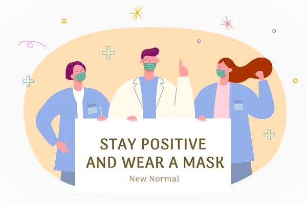

intensive care unit
hospital facility for care of critically ill patients at a more intensive level than is needed by other patients. Staffed by specialized personnel, the intensive care unit contains a complex assortment of monitors and life-support equipment that can sustain life in once-fatal situations, including adult respiratory distress syndrome, kidney failure, multiple organ failure, and sepsis
What to expect
- Experienced ICU team providing advanced round-the-clock care
- 24/7 monitoring of a patient’s vital signs and health status, including alarms alerting us to medical changes and movement
- ICU charge nurse and a team of nurses available to assist throughout the day
- Daily structured multidisciplinary rounds to develop and monitor a patient’s plan of care
- Communication among the ICU team as well as other physicians providing care throughout the day, which includes treatment decisions by providers, information about procedures, and updates on the patient’s status

Available ICUs at Aman hospital
- Intensive Care Unit (CICU): Provides care to patients with serious heart conditions, such as heart failure, heart attacks, angina, dysrhythmia, and other conditions.
- Cardiovascular Intensive Care Unit (CVICU): Dedicated to the constant and close monitoring and care of patients who have undergone heart, lung, or vascular surgery, including heart or lung transplantation.
- Medical Intensive Care Unit (MICU): Specialized care of adult patients with complex medical conditions (lung, liver, kidney, or gastrointestinal conditions as well as infections) who need frequent observation, medical treatment, and specialized monitoring.
- Neuroscience Intensive Care Unit (Neuro ICU): Designed for the monitoring and treatment of patients with complex neurological conditions, including stroke, brain aneurysms, seizures, and other complex neurological conditions that may require surgery.
- Neonatal Intensive Care Unit (NICU): Level 3 NICU, offering comprehensive on-site care for infants of all gestational weights and ages, as well as treatment for high-risk infants. We partner with Children’s Medical Center Dallas to provide full-time support for all critical-care cases.
- Surgical Intensive Care Unit (SICU): Dedicated to the constant and close monitoring and care after major elective or emergency surgery, including for cancer, vascular conditions, and liver or kidney transplantation.

Visiting Guidelines for Adult ICUs
These policies help protect the health and safety of our patients and staff. They may change at any time to support this.
- If you are feeling unwell, please refrain from visiting the hospital
- Two visitors are allowed in the room at a time.
- One visitor is permitted to stay overnight in a patient’s ICU room. Learn about our visitation guidelines and overnight stays at our hospital.
- We do not recommend children under age 12 to be in the ICU rooms except under limited circumstances. However, if visiting, children must be accompanied by an adult at all times. The accompanying adult cannot be the patient.
- When you’re not in the patient’s room, please use the waiting room.
- To help protect patient privacy, limit traffic in the hallways/doorways of the rest of the unit.
- Please do not bring outside food or gifts of flowers/plants into the ICU. This is for infection control.
- Patient valuables and personal medications should be sent home with a trusted family member.
- Remember to wash your hands when entering or leaving your loved one’s room. We also ask that visitors adhere to infection control protocols and wear a gown/mask/gloves when applicable.
- For the safety of your loved one, please do not touch health care equipment or alarms.
- Each of our ICUs may have additional guidelines for visitors.